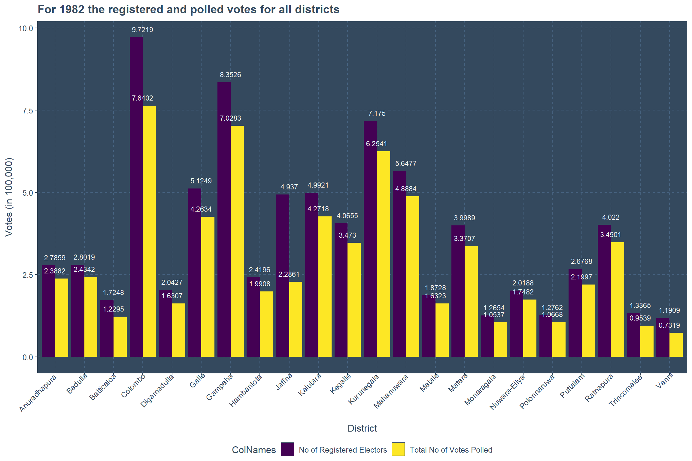
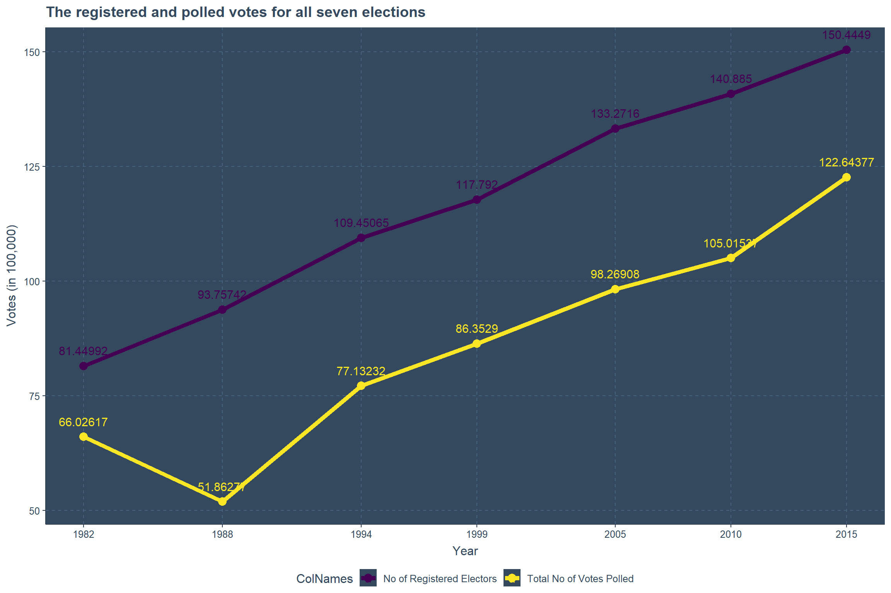
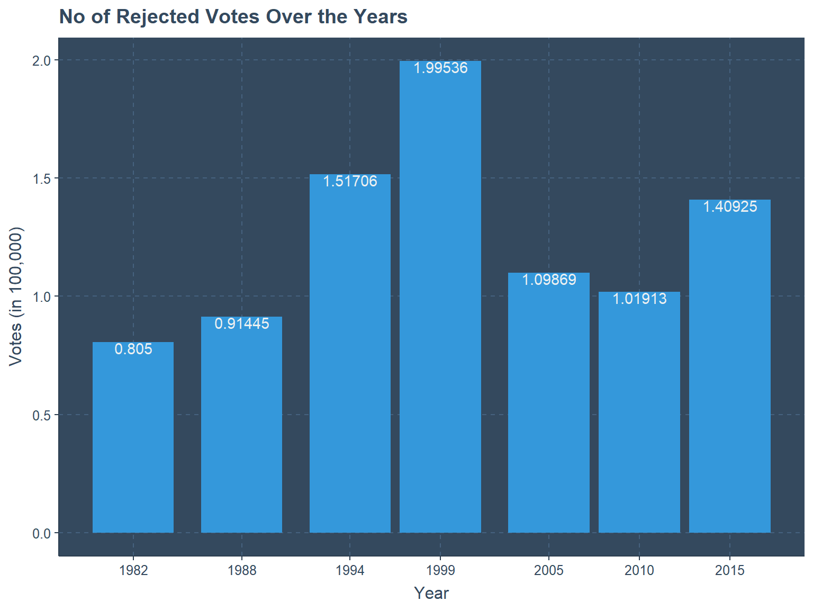

How to engage with “SLPresElection” the first time ?
## Installing the package from GitHub
devtools::install_github("Amalan-ConStat/SLPresElection")
## Installing the package from CRAN
install.packages("SLPresElection")Key Phrases
- Presidential Election
- District
- Electorate
- Postal Votes
- Displaced Votes
- Total No of Valid Votes (Total Valid)
- No of Rejected Votes (Total Rejected)
- Total No of Votes Polled (Total Polled)
- No of Registered Electors (Total Registered)
#Load necessary packages
library(SLPresElection); library(ggplot2); library(dplyr);
library(viridisLite); library(ggthemr); ggthemr("flat dark")What does “SLPresElection” ?
The seven presidential election results of Sri Lanka from 1982 to 2015 are available in the election commission website as pdf files. However, through pdf scraping these results are available as csv files because of my pet project. These csv files are available as data-frames in this R package.
Something to ponder on the tables in these pdf files 1. Total Polled = Total Valid + Total Rejected 2. Total Valid = Votes casted to Candidate + + Votes casted to Candidate 3. Total Polled = (Total Polled/ Total Registered) * 4. Total Valid = (Total Valid/ Total Polled) * 5. Total Rejected = (Total Rejected/ Total Polled) * 6. Candidate = (Candidate A/ Total Polled ) *
Just a glimpse
Election1982 %>%
subset(ColNames=="No of Registered Electors" & Electorate=="Final District Results"|
ColNames=="Total No of Votes Polled" & Electorate=="Final District Results") %>%
group_by(District,ColNames) %>%
summarise(Votes=sum(Votes)/100000) %>%
ungroup(District,ColNames) %>%
ggplot(.,aes(x=District,y=Votes,fill=ColNames,label=round(Votes,4)))+
ylab("Votes (in 100,000)")+xlab("District")+
geom_col(position = "dodge")+
geom_text(vjust=-1,size=3)+
theme(legend.position = "bottom",
axis.text.x = element_text(angle=45,vjust=1.2,hjust=1.1))+
scale_fill_viridis_d()+
ggtitle("For 1982 the registered and polled votes for all districts")
Final_Data<-rbind.data.frame(Election1982,Election1988,
Election1994,Election1999,
Election2005,Election2010,Election2015)
years<-unique(Final_Data$Year)
Final_Data %>%
subset(ColNames=="No of Registered Electors" & Electorate=="Final District Results" |
ColNames=="Total No of Votes Polled" & Electorate=="Final District Results") %>%
group_by(Year,ColNames) %>%
summarise(Votes=sum(Votes)/100000) %>%
ungroup(Year,ColNames) %>%
ggplot(.,aes(Year,Votes,color=ColNames,label=Votes))+
ylab("Votes (in 100,000)")+
geom_point(size=3.5)+geom_line(linewidth=2)+
geom_text(vjust=-1.25,size=4)+
scale_x_continuous(breaks = years)+
theme(legend.position = "bottom")+scale_color_viridis_d()+
ggtitle("The registered and polled votes for all seven elections")
Final_Data %>%
subset(ColNames=="No of Rejected Votes" & Electorate=="Final District Results") %>%
group_by(Year,ColNames) %>%
summarise(Votes=sum(Votes)/100000) %>%
ungroup(Year,ColNames) %>%
ggplot(.,aes(Year,Votes,label=Votes))+
geom_col()+geom_text(vjust=1)+
ylab("Votes (in 100,000)")+
scale_x_continuous(breaks = years)+
theme(legend.position = "bottom")+scale_color_viridis_d()+
ggtitle("No of Rejected Votes Over the Years")
Conclusion
Complete information about how the data was scraped from the pdf files are available at the github repository Presidential Election Data. Read this blog post “Extract Presidential Election Data of 2015 from the Pdf file” for a clear picture of how to scrape the data from pdf files. Results of all elections occured in Sri Lanka are available at the Election Commission website